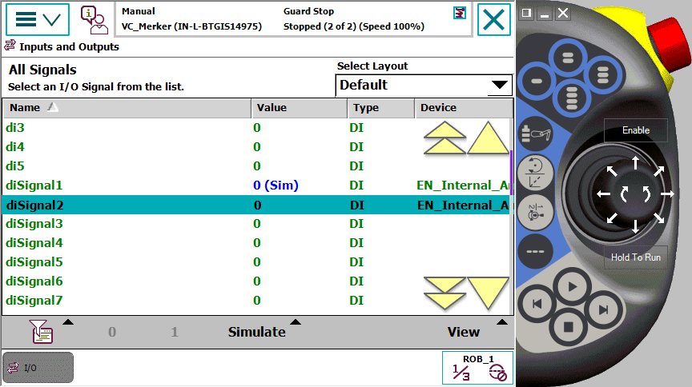
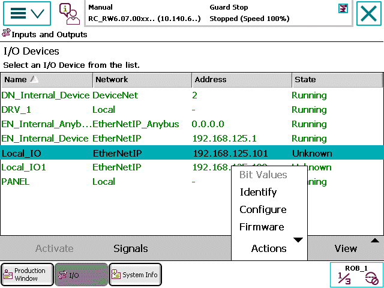
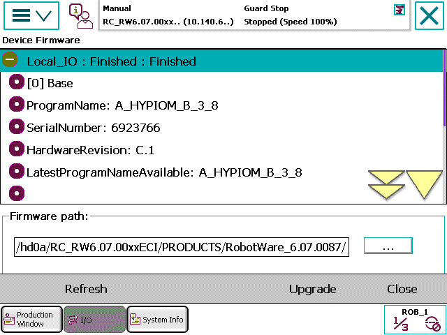

可将某一信号改变为模拟信号。此外，还可更改信号值。
使用如下程序模拟信号或更改信号值。
操作 | |||
1 | 点击ABB菜单上的输入和输出（Inputs and Outputs）。 显示常用信号列表。请参见配置常用 I/O一节。 | ||
2 | 点击视图（View），选择信号滤波器。 更新信号清单。 
| ||
3 | 点击一个信号。 | ||
4 | 点击模拟（Simulate），将信号更改为模拟信号。 点击 Remove Simulation（取消模拟） 可取消信号模拟操作。
| ||
5 | 要查看数字信号，请点击0或1更改信号值。 要查看模拟信号和信号组，请点击123...更改信号值。显示软数字键盘，输入新值，然后点击确定（OK）。
|

欲知更多有关更改信号属性的信息，请参见“控制面板”配置常用 I/O一节。
您可通过I/O装置（I/O Devices）页面管理I/O装置。

通过I/O Devices页面，您可执行如下操作：
操作 | Output | ||
启动/停用 | 启动或停用选定I/O装置。 | ||
Signals | 显示与选定I/O装置有关的信号。 | ||
操作—位值 | 显示选定装置的输入和输出位值。 | ||
操作—识别 | 显示选定装置的MAC ID。
| ||
操作—配置 | 支持配置选定本地I/O装置。
| ||
操作—固件 | 支持升级固件。
|
您可按如下程序，升级EtherNet IP网络的I/O装置的固件。
操作 | 描述 | |||
1 | 点击主菜单上的>输入和输出（Inputs and Outputs）。 | 显示输入和输出（Input & Output）窗口。 | ||
2 | 点击视图（View）> I/O装置（I/O Devices）。 | 显示I/O装置（I/O Devices）窗口。窗口中显示可用I/O装置。 | ||
3 | 选择EtherNet IP I/O装置。 |
| ||
4 | 点击操作—固件（Actions > Firmware）。 | 显示装置固件（Device Firmware）窗口。窗口中显示固件详情。  | ||
5 | 点击升级（Upgrade）。 | 升级选定EtherNet IP I/O装置的固件。 |